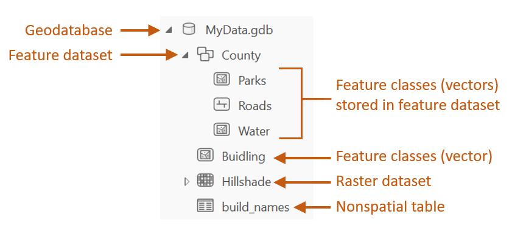
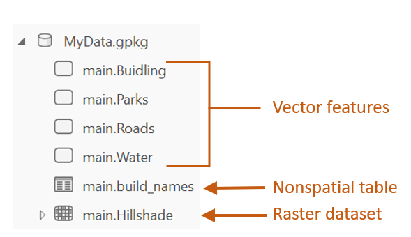
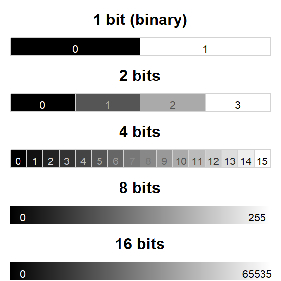
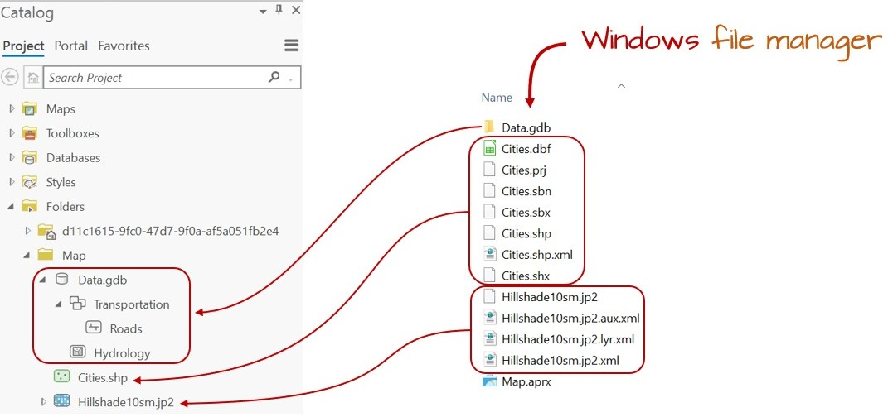
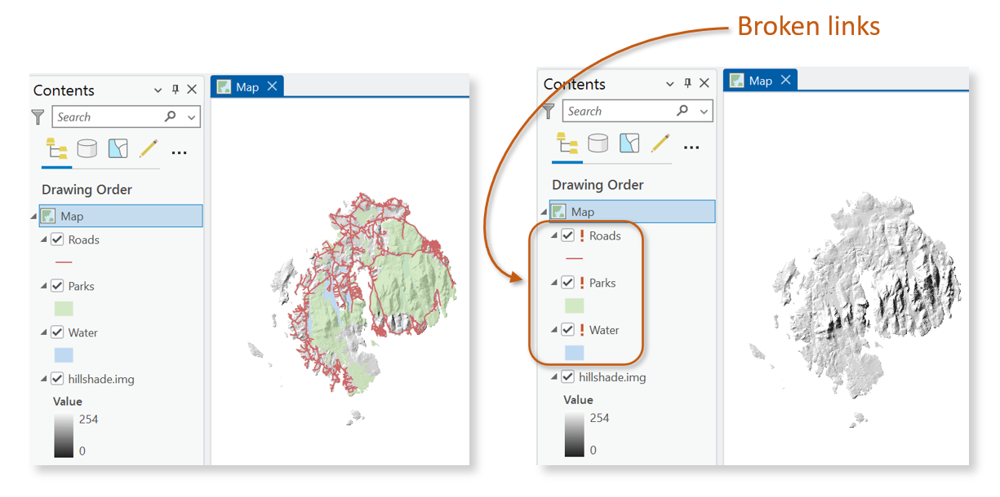

3 GIS Data Management
3.1 Introduction
Effective data management is essential to any GIS workflow. Whether working with spatial data for analysis, visualization, or sharing, understanding how GIS files are structured, stored, and organized ensures efficiency, and reproducibility. This chapter introduces the most common GIS file formats used for both vector and raster data, highlighting their strengths, limitations, and compatibility across platforms.
Beyond file formats, the chapter explores best practices for managing GIS projects within software environments like ArcGIS. Topics such project folder organization and file dependencies are covered to help avoid common pitfalls when working with complex spatial datasets.
3.2 GIS File Data Formats
Imagine you download a roads layer from a state GIS office, a land-cover raster from the USGS, and create your own points in a GIS software. Why do some datasets appear as a single file while others appear as folders containing dozens of files? Why do some layers work in ArcGIS Pro but not others? Why do projects sometimes open with broken links? Understanding GIS data formats and project organization helps answer these questions.
In the GIS world, you will encounter many different GIS file formats. Some file formats are unique to specific GIS applications, others are universal. For this course, we will focus on a subset of spatial data file formats: shapefiles for vector data, Imagine and GeoTiff files for rasters and file geodatabases and GeoPackages for both vector and raster data.
3.3 Comparison table
The following table summarizes key characteristics of the most commonly used GIS file formats discussed above. This comparison includes aspects such as data type, structure, portability, and support for topology and metadata. Metadata are “data about data” and can include information such as the dataset creator, date of creation, coordinate system, source, and processing history.
| Format | Type | Structure | Portability | Topology Support | Metadata Support | Notes |
|---|---|---|---|---|---|---|
| Shapefile | Vector | Multi-file | High | No | Limited | Legacy format, widely supported |
| File Geodatabase | Vector/Raster | Folder-based | Low (ESRI only) | Yes | Strong | Efficient for large datasets |
| GeoPackage | Vector/Raster | Single file | High | Partial | Strong | Open format, cross-platform |
| Imagine (.img) | Raster | Single file (+xml) | Medium | N/A | Moderate | Common in remote sensing |
| GeoTIFF | Raster | Single file | High | N/A | Strong | Public domain, widely supported |
3.4 Vector Data File Formats
3.4.1 Shapefile
A shapefile is a file-based data format native to ArcView 3.x software (a much older version of ArcGIS Pro). Conceptually, a shapefile is a feature class–it stores a collection of features that have the same geometry type (point, line, or polygon), attributes, and spatial extent.
Despite its name, a shapefile is not a single file but a set of files that work together. At minimum, three files are required, but up to eight may be present. Each file shares the same base name but has a different extension, as shown below:
| File extension | Content |
|---|---|
| .dbf | Attribute information |
| .shp | Feature geometry |
| .shx | Feature geometry index |
| .aih | Attribute index |
| .ain | Attribute index |
| .prj | Coordinate system information |
| .sbn | Spatial index file (optional) |
| .sbx | Spatial index file (optional) |
While shapefiles are widely supported and simple to use, they have notable limitations, such as lack of support for topology, limited attribute field name lengths, and constraints on file size and data types.
3.4.2 File Geodatabase
A file geodatabase is a relational database storage format developed by Esri. It is a more complex and versatile structure than the shapefile, consisting of a .gdb folder that houses dozens of files. These files collectively store spatial features, attribute tables, indexes, metadata, and rules that define relationships between features.
One of the key advantages of a file geodatabase is its ability to store multiple feature classes (e.g. vector layers) and raster datasets within a single container. It also supports topological rules, which allow users to define spatial relationships between features—such as shared boundaries or connectivity between lines.
An example of a geodatabase’s contents is shown in the following figure.
File geodatabases are efficient for managing large datasets and support advanced GIS operations. However, they are proprietary to ESRI and may have limited compatibility with non-ESRI software.
3.4.3 GeoPackage
A GeoPackage is a modern, open-standard data format built on top of SQLite–a lightweight, self-contained relational database. It is non-proprietary and designed for efficient storage and transfer of spatial data. One of its key advantages is compactness: coordinate values, metadata, attribute tables, projection information, and even multiple layers (vector and raster) can be stored in a single .gpkg file.
This structure makes GeoPackage highly portable and ideal for sharing complex GIS projects. Unlike shapefiles, which require multiple files, or file geodatabases, which are proprietary to Esri, GeoPackage offers a unified and open solution compatible with a wide range of applications including QGIS (2.12 and up), R, and ArcGIS Pro.
An example of a GeoPackage’s contents is shown in the following figure.

While GeoPackage supports many advanced features, performance may vary depending on the software and dataset size. Some specialized capabilities, such as topology rules, may be more limited compared to Esri’s file geodatabase.
3.5 Raster Data File Formats
Raster data represents spatial phenomena as a grid of cells (pixels), each storing a numeric value. These values can represent elevation, temperature, and land cover for example. Rasters are particularly well-suited for modeling continuous surfaces and are commonly used in remote sensing and environmental analysis.
Some of the most popular raster file formats are listed next
3.5.1 Imagine
The Imagine file format was originally created by an image processing software company called ERDAS. This file format consists of a single .img file. This is a simpler file format than the vector shapefile. It is sometimes accompanied by an .xml file which usually stores metadata information about the raster layer.
3.5.2 GeoTiff
A popular public domain raster data format is the GeoTIFF format. It extends the standard TIFF (Tagged Image File Format) by embedding georeferencing information directly within the file. This includes coordinate system, projection, datum, and spatial resolution, allowing the raster to be accurately placed in geographic space without the need for auxiliary files.
GeoTIFF is widely supported across GIS and remote sensing software, including QGIS, ArcGIS and R. Its portability, platform independence, and open specification make it a popular format for sharing raster data.
GeoTIFF also supports internal compression (e.g., LZW, DEFLATE, JPEG), which can reduce file size.
3.5.3 File Geodatabase
A raster file can also be stored in a file geodatabase alongside vector files. Geodatabases have the benefit of defining image mosaic structures thus allowing the user to create “stitched” images from multiple image files stored in the geodatabase. Also, processing very large raster files can be computationally more efficient when stored in a file geodatabase as opposed to an Imagine or GeoTiff file format.
3.5.4 GeoPackage
In addition to vector data, GeoPackage also supports raster data storage. Raster layers are stored in a tiled format within the same .gpkg file making it a compact and portable solution for mixed data types. GeoPackage is a good choice for sharing raster data across platforms due to its open standard and single-file structure.
3.6 A Note About Raster Pixel Depth
Thus far we have focused on how raster data are stored. Another important characteristic of raster datasets is how cell values themselves are encoded. In raster data, pixel depth (aka bit depth) refers to the number of bits used to store the value of each pixel (cell). It determines the range and precision of values that can be represented. The choice of pixel depth also affects raster file size, storage requirements, and processing efficiency, as rasters with greater bit depths require more memory and disk space.
For example, a 1-bit raster can only store two values (0 and 1), while a 16-bit raster can store up to 65,536 distinct values. The following figure illustrates how pixel depth affects the range of values.

3.7 Managing GIS Files in ArcGIS
Due to the complex and often multi-file structure of many GIS formats–such as shapefiles or file geodatabases–it is strongly recommended to manage GIS files (e.g., copy, move, delete, rename) from within the GIS software environment rather than through external tools like Windows File Explorer. GIS applications are designed to handle the internal dependencies and metadata links that exist between files.
Managing files outside of GIS software can lead to broken links, missing components, or corrupted datasets, especially when dealing with formats that span multiple files or folders. For example, a shapefile may appear as a single layer in ArcGIS but is actually composed of several interdependent files. Renaming or moving just one of these files manually can render the entire dataset unusable.
The figure below illustrates how ArcGIS Catalog simplifies file management by presenting complex datasets as unified entries, reducing the risk of accidental mismanagement.

3.8 Managing GIS Projects and File References
Unlike many other software environments–such as word processors or spreadsheets–a GIS project is not self-contained in a single file. Instead, it consists of a project file (e.g., .aprx in ArcGIS Pro or .qgz in QGIS) and a collection of external spatial data files (e.g., shapefiles, rasters, geodatabases, or GeoPackages). The project file stores information about how layers are symbolized and where the associated data files are located, but it does not embed the data itself.
Because of this structure, GIS software must be able to locate the external data files referenced in the project. If any of these files are renamed, moved, or deleted outside of the GIS environment (e.g., using Windows’ File Explorer), the project file may no longer be able to find them. This results in broken links, which prevent the layers from loading properly.
In ArcGIS Pro, broken links are indicated by exclamation marks next to the affected layers in the Contents pane. This typically occurs when the file path stored in the project no longer matches the actual location of the data on disk.

To avoid these issues, it is best practice to:
- Keep all project-related files in a single, well-organized folder.
- Use relative pathnames, which store file locations relative to the project file’s location rather than as full absolute paths.
- Avoid renaming, moving, or deleting GIS data files outside of the GIS software.
3.9 Summary
This chapter introduced the fundamentals of GIS data management and organization.
- GIS data are stored in a variety of formats, including shapefiles, file geodatabases, GeoPackages, GeoTIFFs, and Imagine files. Each format has advantages and limitations.
- Shapefiles are widely supported but consist of multiple files, whereas GeoPackages store spatial data in a single portable file and file geodatabases support advanced GIS capabilities.
- Raster datasets can be stored in several formats, and pixel depth determines the range and precision of values that a raster can represent.
- GIS data should be managed from within the GIS software environment to avoid breaking internal file dependencies.
- GIS projects store references to data files rather than the data themselves, making folder organization and file management critical.
- Using consistent folder structures and avoiding unnecessary file moves or renaming helps ensure that GIS projects remain functional and reproducible.
Understanding GIS file formats and project organization is an important foundation for efficient GIS workflows and successful spatial analysis.